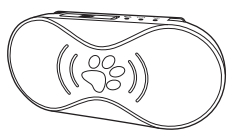

PT-690 宠物追踪器使用手册
封面

追踪器的绑定
1.在设备中装入SIM卡
2.启动设备：长按设备开关键3秒即可开启设备
3.登录航通守护者APP，点击添加新设备按钮，选择“宠物设备”
4.点击扫一扫图标，扫描设备背面的二维码
5.验证成功后自动完成追踪器的绑定
追踪器介绍
1.指示灯简介（插入指示灯说明图片）
2.指示灯状态说明
| 指示类型 | 颜色 | LED状态 | 设备工作状态 |
|---|---|---|---|
| 电源指示灯 | 红色 | ||
| 熄灭 | 未开机/正常工作 | ||
| 常亮 | 充电中 | ||
| 快闪烁(1秒亮，1秒灭) | 充电完成 | ||
| 慢闪烁(1秒亮，7秒灭) | 低电量 | ||
| GSM指示灯 | 蓝色 | ||
| 熄灭 | 未开机 | ||
| 常亮 | 无SIM卡或无GSM网络 | ||
| 快闪烁(1秒亮，1秒灭) | 有信号正常工作 | ||
| 慢闪烁(1秒亮，7秒灭) | 收发数据 | ||
| GPS指示灯 | 绿色 | ||
| 熄灭 | 未开机/待机 | ||
| 闪烁(1秒亮，1秒灭) | GPS定位成功 | ||
| 常亮 | 正在搜索GPS信号 | ||
| 开机指示 | 三个指示灯同时亮2秒，然后按各自工作状态进行工作 | ||
| 关机指示 | 红灯闪烁；1秒亮，1秒灭，1秒亮，关机成功 | ||
| 备注 | GPS 信号灯亮/灭的时间长短，跟设置的追踪频率相关 | ||
充电介绍
设备支持主流手机适配器，为环保考虑，所以未配置电源适配器。请选择合适的适配器给设备充电即可
充电方法：连接适配器
红色LED 快闪表示充电完成红色LED常亮表示充电中
配件
1.背夹
2.USB充电线
佩带方法
将金属背夹固定在追踪器的背面
给宠物栓好宠物绳
将追踪器夹在宠物绳上
常见问题
1.为什么无法开机？
答：可能由于电池耗尽导致，请连接充电器充电后再开机。
2.为什么绑定设备失败？
答：请确认正确扫描二维码或者手动输入设备序列号，若仍无法绑定请与客服联系。
3.为什么定位不成功？
答：设备需要在空旷的位置方可准确定位，请检查所处的环境；建议首次定位在室外空旷位置进行。
4.为什么未配置电源适配器
答：设备支持主流手机适配器，为环保考虑，所以未配置电源适配器。
注意事项
1.一个设备仅能被一个账户绑定, 可以被主账户授权给其他三个账户；
2.请将产品远离火源、高温高热等极端环境；
3.本产品在断电状态和无网络服务时，定位功能无法工作。
售后服务
请咨询当地的业务人员或者我司售后服务中心。
联系我们
有任何问题或建议，欢迎您随时联系我们。
中国大陆
官方微信：航通守护者
客服QQ:3106893070
服务热线：0755-8601 8738
中国香港
服务热线：+852-26273380
邮箱：cs-liteguardian@castelbeidou.com
海外
邮箱: sales@castelbds.com
公司网页:www.lite-guardian.com
服务热线:+8675586018742